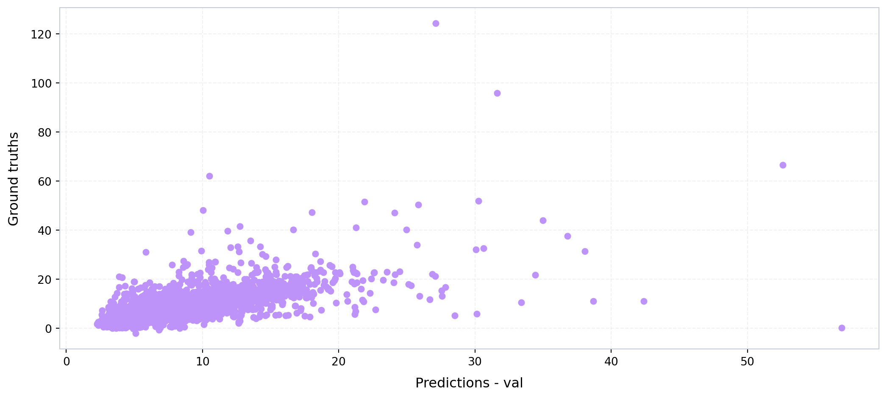
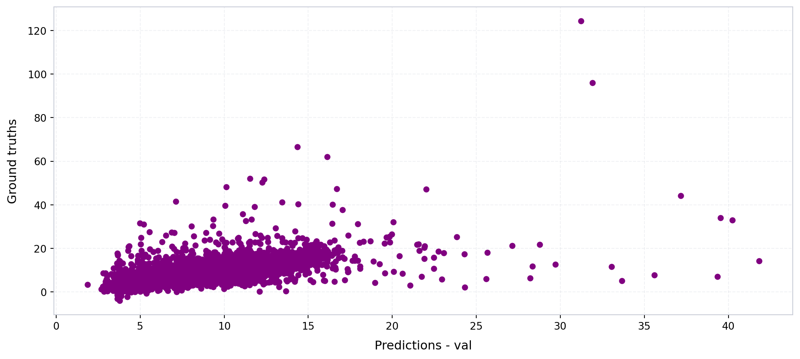
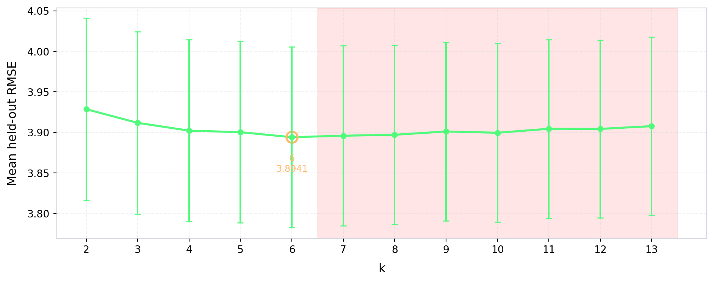
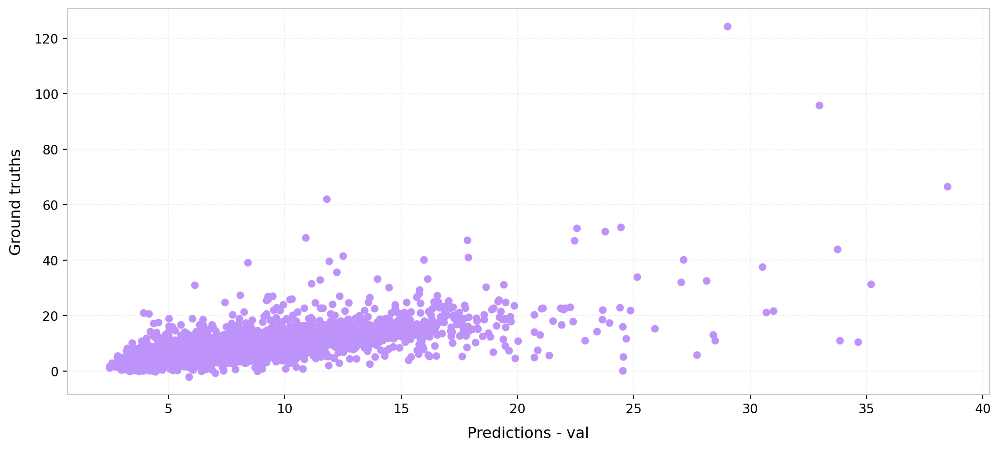

import numpy as np
from sklearn.metrics import r2_score
from pathlib import Path
import geopandas as gpd
import ast
import json
import pandas as pd
from sklearn.preprocessing import StandardScaler
from xgboost import XGBRegressor
import joblib
import matplotlib.pyplot as plt
from imageable.visualization.data_visualization import plot_time_series
from tqdm import tqdm
from imageable._correction_ensembles.cluster_weighted_ensemble import ClusterWeightedEnsembleWrapper
from imageable._correction_ensembles.model_factories import choose_model_for_cluster_xgb
def compute_mse(ground_truths, predicted_values):
mse = 0
n_data = len(ground_truths)
for i in range(n_data):
y_truth = ground_truths[i]
y_predicted = predicted_values[i]
mse += ((y_truth - y_predicted)**2)/n_data
return mse
def compute_rmse(ground_truths, predicted_values):
mse = compute_mse(ground_truths, predicted_values)
return np.sqrt(mse)
def compute_mae(ground_truths, predicted_values):
mae = 0
n_data = len(ground_truths)
for i in range(n_data):
y_truth = ground_truths[i]
y_predicted = predicted_values[i]
mae += np.abs(y_truth - y_predicted)/n_data
return mae
def obtain_model_metrics(preds, ground_truths):
mse = compute_mse(preds, ground_truths)
rmse = compute_rmse(preds, ground_truths)
mae = compute_mae(preds, ground_truths)
r2_val = r2_score(ground_truths, preds)
return {
"mse":mse,
"rmse":rmse,
"mae":mae,
"r2_val":r2_val
}Model training — 3 cities
Define metrics calculation functions
Opening the ground truth data
PARENT_PATH = Path("/Users/legariapena.j/Library/CloudStorage/GoogleDrive-legariapena.j@husky.neu.edu/Shared drives/Cool and Carbon Free Africa/Building Image Datasets/data")
#Ground truth boston
GROUND_TRUTH_BOSTON_PATH = PARENT_PATH/"boston"/"footprints"/"labelled_buildings_meters.geojson"
ground_truth_boston = gpd.read_file(GROUND_TRUTH_BOSTON_PATH)
#All buildings boston
ALL_BUILDINGS_BOSTON_PATH = PARENT_PATH/"boston"/"footprints"/"boston_buildings.geojson"
all_buildings_boston = gpd.read_file(ALL_BUILDINGS_BOSTON_PATH)
#San Francisco uses a different parent path
PARENT_PATH_SAN_FRANCISCO = Path("/Users/legariapena.j/Documents/imageable-2026/imageable/data/sanfrancisco_data")
#Ground truths San Francisco
GROUND_TRUTH_SF_PATH = PARENT_PATH_SAN_FRANCISCO/"footprints"/"Building_Footprints_sample_10000.geojson"
ground_truth_san_francisco = gpd.read_file(GROUND_TRUTH_SF_PATH)
#All buildings San Francisco
ALL_BUILDINGS_SF_PATH = PARENT_PATH_SAN_FRANCISCO/"footprints"/"Building_Footprints_20260820.geojson"
all_buildings_san_francisco = gpd.read_file(ALL_BUILDINGS_SF_PATH)
#Ground truth Monterrey
GROUND_TRUTH_MONTERREY_PATH = PARENT_PATH/"monterrey"/"footprints"/"labelled_buildings_expanded.geojson"
ground_truth_monterrey = gpd.read_file(GROUND_TRUTH_MONTERREY_PATH)
#All buildings monterrey
ALL_BUILDINGS_MONTERREY_PATH = PARENT_PATH/"monterrey"/"footprints"/"all_buildings_dedup.geojson"
all_buildings_monterrey = gpd.read_file(ALL_BUILDINGS_MONTERREY_PATH)
ground_truth_san_francisco.head(5)| :id | :version | :created_at | :updated_at | sf16_bldgid | area_id | mblr | p2010_name | p2010_zminn88ft | p2010_zmaxn88ft | ... | peak_1st_m | globalid | data_as_of | data_loaded_at | x | y | lon | lat | building_height | geometry | |
|---|---|---|---|---|---|---|---|---|---|---|---|---|---|---|---|---|---|---|---|---|---|
| 0 | row-df9e~vtm4.cft2 | rv-4ase.chzb.6iq7 | 2026-08-20 17:20:38.313000+00:00 | 2026-08-20 17:20:38.313000+00:00 | 201006.0066993 | 66993 | SF1294034 | NaN | NaN | NaN | ... | 140.12 | {B6F2FD7A-B9F8-47C8-B31B-F02D79CE0E4D} | 2023-09-11 12:00:00 | 2026-08-20 10:19:44.118 | 548493.106022 | 4.179400e+06 | -122.449457 | 37.760635 | 11.01 | MULTIPOLYGON (((-122.44942 37.76066, -122.4494... |
| 1 | row-jyxd.fedf_bnca | rv-iu7i.vwpa.6mc6 | 2026-08-20 17:20:38.313000+00:00 | 2026-08-20 17:20:38.313000+00:00 | 201006.0066995 | 66995 | SF6984025 | SanfranP_0193.flt | 319.2944 | 364.97320000000002 | ... | 109.28 | {86BA6FF1-1F76-4F2A-B5E4-DA45159B3FD4} | 2023-09-11 12:00:00 | 2026-08-20 10:19:44.118 | 547681.247354 | 4.174934e+06 | -122.458966 | 37.720425 | 8.57 | MULTIPOLYGON (((-122.45906 37.72046, -122.4589... |
| 2 | row-hs9g~4rbz~95dr | rv-zjpq_43gw_agct | 2026-08-20 17:20:38.313000+00:00 | 2026-08-20 17:20:38.313000+00:00 | 201006.0067025 | 67025 | SF3106012A | SanfranO_04134.flt | 404.3612 | 427.46480000000003 | ... | 131.33000000000001 | {D712745F-7AC5-4EE4-A624-E41B5646D53A} | 2023-09-11 12:00:00 | 2026-08-20 10:19:44.118 | 547562.519276 | 4.175918e+06 | -122.460249 | 37.729295 | 6.02 | MULTIPOLYGON (((-122.46018 37.72935, -122.4601... |
| 3 | row-wzvi.p5dz.3cea | rv-jvc4-suuu_jpi8 | 2026-08-20 17:20:38.313000+00:00 | 2026-08-20 17:20:38.313000+00:00 | 201006.0067070 | 67070 | SF2059001A | SanfranQ_0983.flt | 385.7851 | 409.20269999999999 | ... | 112.66 | {D04C2D55-011A-4DC3-B047-041C744F2B92} | 2023-09-11 12:00:00 | 2026-08-20 10:19:44.118 | 545815.551542 | 4.178621e+06 | -122.479903 | 37.753747 | 10.37 | MULTIPOLYGON (((-122.47992 37.75378, -122.4798... |
| 4 | row-8byv-efu8~ui2s | rv-x59y-yiqk_y6mq | 2026-08-20 17:20:38.313000+00:00 | 2026-08-20 17:20:38.313000+00:00 | 201006.0067081 | 67081 | SF4266051 | SanfranH_06944.flt | 49.659500000000001 | 94.169200000000004 | ... | 28.5 | {71F6331F-E31F-4FEC-9E2F-3F6EBE720C41} | 2023-09-11 12:00:00 | 2026-08-20 10:19:44.118 | 552155.121768 | 4.178511e+06 | -122.407948 | 37.752424 | 12.02 | MULTIPOLYGON (((-122.40783 37.7524, -122.40788... |
5 rows × 54 columns
Opening the footprint batches
These batches were obtained through application of the Imageable library.
BATCHES_NAMES = ["1-1000", "1000-2000", "2000-3000", "3000-4000", "4000-5000", "5000-6000", "6000-7000", "7000-8000", "8000-9000", "9000-10000"]
monterrey_geojsons = {}
for i in [0,1,2,3,4,5,20,21,22,23,24,25,26]:
if(i == 0):
first_index = i*1000 + 1
else:
first_index = i*1000
second_index = (i+1)*1000
first_string = "Images "+f"{first_index} - {second_index}"
file_path = PARENT_PATH/"monterrey_dedup"/first_string/f"building_data_{first_index}_{second_index}.geojson"
monterrey_geojsons[f"{first_index}-{second_index}"] = gpd.read_file(file_path)
boston_geojsons = {}
for i in range(10):
if(i == 0):
first_index = i*1000+1
else:
first_index = i*1000
second_index = (i+1)*1000
first_string = "Images "+f"{first_index} - {second_index}"
file_path = PARENT_PATH/"boston"/first_string/f"building_data_{first_index}_{second_index}.geojson"
boston_geojsons[BATCHES_NAMES[i]] = gpd.read_file(file_path)
#For San Francisco we have a single file
SAN_FRANCISCO_RESULTS_PATH = PARENT_PATH_SAN_FRANCISCO/"labelled_footprints"/"san_francisco_results.geojson"
san_francisco_geojson = gpd.read_file(SAN_FRANCISCO_RESULTS_PATH)
boston_geojsons["1000-2000"].head(5)| unprojected_area | projected_area | longitude_difference | latitude_difference | n_vertices | shape_length | complexity | inverse_average_segment_length | vertices_per_area | average_complexity_per_segment | ... | number_of_edges | number_of_vertices | average_window_x | average_window_y | average_door_x | average_door_y | number_of_windows | number_of_doors | building_id | geometry | |
|---|---|---|---|---|---|---|---|---|---|---|---|---|---|---|---|---|---|---|---|---|---|
| 0 | 1.625481e-08 | 272.548229 | 0.000235 | 0.000128 | 29 | 0.000677 | 41628.592348 | 42857.244262 | 1.784087e+09 | 1435.468702 | ... | 0 | 0 | 0.0 | 0.0 | 0.0 | 0.0 | 0 | 0 | building_1001 | POLYGON ((-71.15676 42.34845, -71.15677 42.348... |
| 1 | 2.076492e-08 | 348.171120 | 0.000249 | 0.000110 | 14 | 0.000648 | 31184.213707 | 21620.365920 | 6.742141e+08 | 2227.443836 | ... | 0 | 0 | 0.0 | 0.0 | 0.0 | 0.0 | 0 | 0 | building_1002 | POLYGON ((-71.15688 42.34862, -71.15689 42.348... |
| 2 | 1.408153e-08 | 236.111892 | 0.000171 | 0.000089 | 6 | 0.000503 | 35721.389460 | 11928.145615 | 4.260899e+08 | 5953.564910 | ... | 0 | 0 | 0.0 | 0.0 | 0.0 | 0.0 | 0 | 0 | building_1003 | POLYGON ((-71.15671 42.3493, -71.15671 42.3493... |
| 3 | 1.003160e-08 | 168.201590 | 0.000186 | 0.000097 | 8 | 0.000454 | 45297.829992 | 17605.258992 | 7.974800e+08 | 5662.228749 | ... | 0 | 0 | 0.0 | 0.0 | 0.0 | 0.0 | 0 | 0 | building_1004 | POLYGON ((-71.15674 42.3482, -71.1569 42.34824... |
| 4 | 5.307786e-09 | 88.997032 | 0.000113 | 0.000078 | 10 | 0.000303 | 57089.363251 | 33001.325477 | 1.884025e+09 | 5708.936325 | ... | 0 | 0 | 0.0 | 0.0 | 0.0 | 0.0 | 0 | 0 | building_1005 | POLYGON ((-71.15689 42.34852, -71.15698 42.348... |
5 rows × 43 columns
Expanding the materials
The material column currently is a dictionary and needs to be expanded so that each material percentage has its own column.
#Function to expand the material columns.
def expand_materials(gdf):
#This would be a list of dictionaries.
materials = list(gdf["material_percentages"])
materials = [ast.literal_eval(x) for x in materials]
ALL_MATERIALS = ["asphalt","concrete","metal","road_marking","fabric_leather","glass","plaster", "plastic","rubber","sand", "gravel","ceramic","cobblestone","brick","grass","wood","leaf","water","human_body","sky"]
BASE_STR = "material_pct_"
#These would be all the materials
keys = ALL_MATERIALS
for i in range(len(keys)):
material_name = keys[i]
column_name = BASE_STR+material_name
column_values = []
for m in materials:
#Case where the dictionary is empty
if(not m):
column_values.append(None)
#Case where there is a percentages option in m (need to check why this happens)
elif(material_name not in m and "percentages" in m and material_name in m["percentages"]):
column_values.append(m["percentages"][material_name])
#Case where the dictionary just has materials: percentage.
elif(material_name in m):
column_values.append(m[material_name])
else:
print(m)
print(material_name)
gdf[column_name] = column_values
return gdf
keys_monterrey_geojsons = list(monterrey_geojsons.keys())
#Expand the Monterrey batches.
for i in range(len(keys_monterrey_geojsons)):
key = keys_monterrey_geojsons[i]
monterrey_geojsons[key] = expand_materials(monterrey_geojsons[key])
#Expand the Boston batches.
keys_boston_geojsons = list(boston_geojsons.keys())
for i in range(len(keys_boston_geojsons)):
key = keys_boston_geojsons[i]
boston_geojsons[key] = expand_materials(boston_geojsons[key])
#Expand the San Francisco results.
san_francisco_geojson = expand_materials(san_francisco_geojson)
san_francisco_geojson.head(5)| unprojected_area | projected_area | longitude_difference | latitude_difference | n_vertices | shape_length | complexity | inverse_average_segment_length | vertices_per_area | average_complexity_per_segment | ... | material_pct_gravel | material_pct_ceramic | material_pct_cobblestone | material_pct_brick | material_pct_grass | material_pct_wood | material_pct_leaf | material_pct_water | material_pct_human_body | material_pct_sky | |
|---|---|---|---|---|---|---|---|---|---|---|---|---|---|---|---|---|---|---|---|---|---|
| 0 | 1.417644e-08 | 222.211314 | 0.000136 | 0.000154 | 12 | 0.000514 | 36225.788166 | 23366.629565 | 8.464746e+08 | 3018.815680 | ... | 0.0 | 0.011946 | 0.011360 | 0.000259 | 0.000129 | 0.000000 | 0.057620 | 0.0 | 0.0 | 0.007905 |
| 1 | 1.416872e-08 | 221.969552 | 0.000232 | 0.000071 | 28 | 0.000595 | 41958.967693 | 47098.031922 | 1.976185e+09 | 1498.534560 | ... | 0.0 | 0.037180 | 0.041187 | 0.004082 | 0.006382 | 0.000098 | 0.103916 | 0.0 | 0.0 | 0.375916 |
| 2 | 1.416891e-08 | 221.999226 | 0.000174 | 0.000119 | 36 | 0.000542 | 38279.698733 | 66373.920079 | 2.540774e+09 | 1063.324965 | ... | 0.0 | 0.001709 | 0.000000 | 0.000000 | 0.000032 | 0.000559 | 0.111260 | 0.0 | 0.0 | 0.624458 |
| 3 | 1.416995e-08 | 222.088847 | 0.000207 | 0.000078 | 12 | 0.000544 | 38420.170193 | 22042.132882 | 8.468625e+08 | 3201.680849 | ... | 0.0 | 0.009348 | 0.102188 | 0.000176 | 0.008337 | 0.000037 | 0.002515 | 0.0 | 0.0 | 0.132705 |
| 4 | 1.416943e-08 | 222.076638 | 0.000269 | 0.000079 | 41 | 0.000693 | 48935.985946 | 59129.373001 | 2.893554e+09 | 1193.560633 | ... | 0.0 | 0.014824 | 0.028972 | 0.000042 | 0.001536 | 0.001001 | 0.062546 | 0.0 | 0.0 | 0.181816 |
5 rows × 63 columns
Reducing the number of features
We reduce the number of features to the ones used to train the models.
FOOTPRINT_FEATURES = [
"unprojected_area",
"projected_area",
"longitude_difference",
"latitude_difference",
"n_vertices",
"shape_length",
"complexity",
"inverse_average_segment_length",
"vertices_per_area",
"average_complexity_per_segment",
"isoperimetric_quotient",
"mean_distance_to_neighbors",
'nearest_neighbor_distance'
]
MATERIALS = [
"material_pct_concrete",
"material_pct_metal",
"material_pct_glass",
"material_pct_plastic",
"material_pct_asphalt",
"material_pct_brick",
"material_pct_human_body",
"material_pct_wood",
"material_pct_plaster",
"material_pct_leaf",
]
BUILDING_HEIGHT = "building_height"
all_features = []
all_features.extend(FOOTPRINT_FEATURES)
all_features.extend(MATERIALS)
all_features.append(BUILDING_HEIGHT)
#Combine all the batches for Monterrey and Boston.
gdf_monterrey = pd.concat(monterrey_geojsons.values(), ignore_index=True)
gdf_boston = pd.concat(boston_geojsons.values(), ignore_index=True)
#For Monterrey keep only the rows that have a ground truth value.
ground_truth_monterrey = ground_truth_monterrey.set_index("building_id")
has_height = gdf_monterrey["building_id"].isin(ground_truth_monterrey.index)
rows_without_height = (~has_height).sum()
gdf_monterrey = gdf_monterrey[has_height]
ids_monterrey = list(gdf_monterrey["building_id"])
#Keep only the features that the models use.
data_monterrey = gdf_monterrey[all_features].to_numpy()
labelled_without_features = set(ground_truth_monterrey.index).difference(ids_monterrey)
ground_truth_monterrey = ground_truth_monterrey.loc[ids_monterrey]
#Let's do the same for boston
ids_boston = list(gdf_boston["building_id"])
data_boston = gdf_boston[all_features].to_numpy()
ids_boston_nums = [int(x.split("_")[-1])-1 for x in ids_boston]
ground_truth_boston = ground_truth_boston[ground_truth_boston.index.isin(ids_boston_nums)]
#Now SF
ids_san_francisco = list(san_francisco_geojson["building_id"])
data_san_francisco = san_francisco_geojson[all_features].to_numpy()
ids_san_francisco_nums = [int(x.split("_")[-1]) for x in ids_san_francisco]
ground_truth_san_francisco = ground_truth_san_francisco[ground_truth_san_francisco.index.isin(ids_san_francisco_nums)]Extracting the ground truths
heights_monterrey = ground_truth_monterrey["height"]
heights_boston = ground_truth_boston["height_meters"]
heights_san_francisco = ground_truth_san_francisco["building_height"]Training the single XGBoost
Define a function to split the data.
def train_split(data, labels, train_percentage = 0.8, random_state = 42):
n_data = np.size(data, 0)
n_train = int(train_percentage*n_data)
n_validation = n_data - n_train
#Ok, now I need to pick elements
np.random.seed(random_state)
indices_train = np.random.choice(data.shape[0], size=n_train, replace=False)
initial_indices = list(range(n_data))
indices_val = [x for x in initial_indices if x not in indices_train]
training_data = data[indices_train]
validation_data = data[indices_val]
training_labels = labels[indices_train]
validation_labels = labels[indices_val]
results = {}
results["x_train"] = training_data
results["x_val"] = validation_data
results["y_train"] = training_labels
results["y_val"] = validation_labels
results["indices_train"] = indices_train
results["indices_val"] = indices_val
return resultsNow let’s train the single XGBoost.
PARENT_PATH_EXPORT = Path("/Users/legariapena.j/Documents/imageable-2026/imageable/clustering-paper-notebooks/imageable-3-cities-experiments-notebooks/dummy_data")
#Combine all data (Monterrey, Boston, and San Francisco).
all_data = np.concatenate((data_monterrey, data_boston, data_san_francisco), axis = 0)
all_labels = np.concatenate((heights_monterrey, heights_boston, heights_san_francisco), axis = 0)
standard_scaler = StandardScaler()
normalized_all_data = standard_scaler.fit_transform(all_data)
#Get the train/val split.
RANDOM_STATE = 85
train_split_results = train_split(
data = normalized_all_data,
labels = all_labels,
train_percentage = 0.8,
random_state = RANDOM_STATE
)
#Parameters for the XGBoost estimator.
XGB_PARAMS = dict(
n_estimators=300,
max_depth=6,
learning_rate=0.05,
subsample=0.9,
colsample_bytree=0.9,
reg_lambda=1.0,
objective="reg:squarederror",
random_state=0,
n_jobs=-1,
)
#Keep only the vectors where all entries are finite.
mask_train = np.isfinite(train_split_results["x_train"]).all(axis=1)
mask_val = np.isfinite(train_split_results["x_val"]).all(axis=1)
valid_train = train_split_results["x_train"][mask_train]
valid_train_labels = train_split_results["y_train"][mask_train]
valid_val = train_split_results["x_val"][mask_val]
valid_val_labels = train_split_results["y_val"][mask_val]
valid_train_indices = train_split_results["indices_train"][mask_train]
valid_val_indices = np.array(train_split_results["indices_val"])[mask_val]
# Train the single XGBoost model.
xgb_single_model = XGBRegressor(**XGB_PARAMS, early_stopping_rounds=50)
xgb_single_model.fit(valid_train, valid_train_labels, eval_set=[(valid_val, valid_val_labels)], verbose=False)
preds_single_xgb = xgb_single_model.predict(valid_val)
#Export the model.
SINGLE_MODEL_PATH = PARENT_PATH_EXPORT/"single_xgb_model_pooled_3_cities.pkl"
joblib.dump(xgb_single_model, SINGLE_MODEL_PATH)
#Get the model's metrics and print them.
single_model_metrics = obtain_model_metrics(
preds_single_xgb,
valid_val_labels
)
print(single_model_metrics)
DRACULA_COLORS = {
"comment": "#6272a4",
"purple": "#bd93f9",
"red": "#ff5555",
"green": "#50fa7b",
"yellow": "#f1fa8c",
"pink": "#ff79c6",
"cyan": "#8be9fd",
"blue": "#44475a",
"orange": "#ffb86c"
}
plot_time_series(
preds_single_xgb,
valid_val_labels,
x_label = "Predictions - val",
y_label = "Ground truths",
color = DRACULA_COLORS["purple"],
linewidth = 0,
xticks_every = 0
){'mse': np.float64(12.73915989444686), 'rmse': np.float64(3.5691959731075094), 'mae': np.float64(1.9006091487071555), 'r2_val': 0.5057790925225827}
(<Figure size 1056x480 with 1 Axes>,
<Axes: xlabel='Predictions - val', ylabel='Ground truths'>)Training the footprint-based model
#Indices that correspond to footprint features.
indices_footprints = [i for i in range(len(all_features)) if all_features[i] in FOOTPRINT_FEATURES]
#Reduce the dims of the data.
footprint_data = normalized_all_data[:, indices_footprints]
#Get the train/val split.
results = train_split(
data = footprint_data,
labels = all_labels,
train_percentage = 0.8,
random_state = RANDOM_STATE
)
#Keep only the vectors where all the entries are finite.
mask_train = np.isfinite(results["x_train"]).all(axis=1)
mask_val = np.isfinite(results["x_val"]).all(axis=1)
valid_train = results["x_train"][mask_train]
valid_train_labels = results["y_train"][mask_train]
valid_val = results["x_val"][mask_val]
valid_val_labels = results["y_val"][mask_val]
valid_train_indices = results["indices_train"][mask_train]
valid_val_indices = np.array(results["indices_val"])[mask_val]
footprint_train_indices = valid_train_indices
footprint_val_indices = valid_val_indices
# Train the footprint-based model.
xgb_footprint_model = XGBRegressor(**XGB_PARAMS, early_stopping_rounds=50)
xgb_footprint_model.fit(valid_train, valid_train_labels, eval_set=[(valid_val, valid_val_labels)], verbose=False)
preds_footprint_xgb = xgb_footprint_model.predict(valid_val)
#Export the model.
FOOTPRINT_MODEL_PATH = PARENT_PATH_EXPORT/"footprint_xgb_model_pooled_3_cities.pkl"
joblib.dump(xgb_footprint_model, FOOTPRINT_MODEL_PATH)
#Get the model's metrics and print them.
footprint_model_metrics = obtain_model_metrics(
preds_footprint_xgb,
valid_val_labels
)
print(footprint_model_metrics)
plot_time_series(
preds_footprint_xgb,
valid_val_labels,
x_label = "Predictions - val",
y_label = "Ground truths",
color = "purple",
linewidth = 0,
xticks_every = 0
){'mse': np.float64(14.987439790207185), 'rmse': np.float64(3.871361490510436), 'mae': np.float64(2.1366179453912855), 'r2_val': 0.4139251893080207}
(<Figure size 1056x480 with 1 Axes>,
<Axes: xlabel='Predictions - val', ylabel='Ground truths'>)Comparison of models over multiple seeds
#Let's compare over multiple seeds
clustering_indices = list(range(len(all_features) - 1))
SEEDS = range(20, 50)
result_dictionaries = []
for seed in SEEDS:
split_results = train_split(normalized_all_data, all_labels, train_percentage=0.8, random_state=seed)
split_results_footprint = train_split(footprint_data, all_labels, train_percentage=0.8, random_state=seed)
mask_train = np.isfinite(split_results["x_train"]).all(axis=1)
mask_val = np.isfinite(split_results["x_val"]).all(axis=1)
x_train_clean = split_results["x_train"][mask_train]
y_train_clean = split_results["y_train"][mask_train]
x_val_clean = split_results["x_val"][mask_val]
y_val_clean = split_results["y_val"][mask_val]
mask_train_footprint = np.isfinite(split_results_footprint["x_train"]).all(axis=1)
mask_val_footprint = np.isfinite(split_results_footprint["x_val"]).all(axis=1)
x_train_footprint_clean = split_results_footprint["x_train"][mask_train_footprint]
y_train_footprint_clean = split_results_footprint["y_train"][mask_train_footprint]
x_val_footprint_clean = split_results_footprint["x_val"][mask_val_footprint]
y_val_footprint_clean = split_results_footprint["y_val"][mask_val_footprint]
best_k = None
rmse = float("Inf")
k_curve = {}
size_curve = {}
inner = train_split(x_train_clean, y_train_clean, train_percentage=0.8, random_state=seed)
for k in tqdm(range(2, 14)):
m = ClusterWeightedEnsembleWrapper(
n_clusters=k,
model_factory=choose_model_for_cluster_xgb,
kmeans_kwargs={"n_init": 10, "random_state": RANDOM_STATE},
feature_indices_used_for_clustering=clustering_indices,
decay_constant=0.1,
outside_weight_tau=170)
m.fit(inner["x_train"], inner["y_train"])
predictions = m.predict(inner["x_val"])
metrics = obtain_model_metrics(predictions, inner["y_val"])
k_curve[k] = metrics["rmse"]
size_curve[k] = int(np.bincount(m._kmeans.labels_, minlength=k).min())
if(metrics["rmse"]<rmse):
rmse = metrics["rmse"]
best_k = k
results_dictionary = {}
model = ClusterWeightedEnsembleWrapper(
n_clusters=best_k,
model_factory=choose_model_for_cluster_xgb,
kmeans_kwargs={"n_init": 10, "random_state": RANDOM_STATE},
feature_indices_used_for_clustering=clustering_indices,
decay_constant=0.1,
outside_weight_tau=170)
model.fit(x_train_clean, y_train_clean)
predictions = model.predict(x_val_clean)
metrics = obtain_model_metrics(predictions, y_val_clean)
results_dictionary["cluster_then_predict_rmse"] = metrics["rmse"]
xgb_model = XGBRegressor(**XGB_PARAMS)
xgb_model.fit(x_train_clean, y_train_clean)
rmse_xgb = compute_rmse(xgb_model.predict(x_val_clean), y_val_clean)
results_dictionary["universal_model_rmse"] = rmse_xgb
xgb_model_footprint = XGBRegressor(**XGB_PARAMS)
xgb_model_footprint.fit(x_train_footprint_clean, y_train_footprint_clean)
rmse_xgb_footprint = compute_rmse(xgb_model_footprint.predict(x_val_footprint_clean), y_val_footprint_clean)
results_dictionary["footprint_model_rmse"] = rmse_xgb_footprint
results_dictionary["best_k"] = best_k
results_dictionary["k_curve"] = k_curve
results_dictionary["min_cluster_size"] = size_curve
result_dictionaries.append(results_dictionary)
print(results_dictionary)
#In the end we export
path = PARENT_PATH_EXPORT/"results_universal_vs_cluster_pooled_3_cities.json"
#Export the data.
path.parent.mkdir(parents=True, exist_ok=True)
with open(path, "w") as f:
json.dump(result_dictionaries, f, indent=2)
print("Saved to", path){'cluster_then_predict_rmse': np.float64(3.646103588375852), 'universal_model_rmse': np.float64(3.6999628226725294), 'footprint_model_rmse': np.float64(3.8595523028379337), 'best_k': 3, 'k_curve': {2: np.float64(4.486652921475095), 3: np.float64(4.458960914120532), 4: np.float64(4.484870261318663), 5: np.float64(4.46529725833709), 6: np.float64(4.4595219191845725), 7: np.float64(4.471713317115061), 8: np.float64(4.460001874759305), 9: np.float64(4.479165878126061), 10: np.float64(4.490905362101385), 11: np.float64(4.48142496893847), 12: np.float64(4.500280713466479), 13: np.float64(4.506071767265253)}, 'min_cluster_size': {2: 1774, 3: 1181, 4: 1089, 5: 194, 6: 181, 7: 16, 8: 16, 9: 16, 10: 16, 11: 22, 12: 16, 13: 16}}{'cluster_then_predict_rmse': np.float64(3.214135911778396), 'universal_model_rmse': np.float64(3.368087576528184), 'footprint_model_rmse': np.float64(3.7444859677466553), 'best_k': 10, 'k_curve': {2: np.float64(3.7664600183490413), 3: np.float64(3.6833428289146513), 4: np.float64(3.664886697914128), 5: np.float64(3.685215512702755), 6: np.float64(3.670958781019965), 7: np.float64(3.6720529329296285), 8: np.float64(3.65449635267208), 9: np.float64(3.682206240219666), 10: np.float64(3.6481059512415595), 11: np.float64(3.6552526642181147), 12: np.float64(3.6609501644785176), 13: np.float64(3.663659090894997)}, 'min_cluster_size': {2: 1715, 3: 1174, 4: 185, 5: 164, 6: 159, 7: 17, 8: 20, 9: 20, 10: 16, 11: 28, 12: 16, 13: 20}}{'cluster_then_predict_rmse': np.float64(3.812030786395248), 'universal_model_rmse': np.float64(3.922482554056785), 'footprint_model_rmse': np.float64(4.2967774070959255), 'best_k': 7, 'k_curve': {2: np.float64(4.409344385725321), 3: np.float64(4.336765911076267), 4: np.float64(4.219911227218638), 5: np.float64(4.147625531135106), 6: np.float64(4.144734374060071), 7: np.float64(4.135637088790403), 8: np.float64(4.15061743020581), 9: np.float64(4.173520384347531), 10: np.float64(4.171571668827506), 11: np.float64(4.151314748779477), 12: np.float64(4.145733200161418), 13: np.float64(4.163682230267002)}, 'min_cluster_size': {2: 1756, 3: 1226, 4: 964, 5: 204, 6: 195, 7: 205, 8: 19, 9: 19, 10: 19, 11: 36, 12: 19, 13: 36}}{'cluster_then_predict_rmse': np.float64(4.240359180090953), 'universal_model_rmse': np.float64(4.3261713282007115), 'footprint_model_rmse': np.float64(4.832176039034388), 'best_k': 11, 'k_curve': {2: np.float64(4.061233874408119), 3: np.float64(4.034803237716355), 4: np.float64(4.047685189507294), 5: np.float64(4.055066521943006), 6: np.float64(4.047151591179634), 7: np.float64(4.032828430707299), 8: np.float64(4.026157503100275), 9: np.float64(4.020234779946583), 10: np.float64(4.021799585550973), 11: np.float64(4.006918469139204), 12: np.float64(4.018677950175279), 13: np.float64(4.018842648270269)}, 'min_cluster_size': {2: 1547, 3: 1093, 4: 147, 5: 146, 6: 146, 7: 35, 8: 47, 9: 18, 10: 14, 11: 14, 12: 18, 13: 14}}{'cluster_then_predict_rmse': np.float64(4.057203310289056), 'universal_model_rmse': np.float64(4.164656599682605), 'footprint_model_rmse': np.float64(4.403595442625357), 'best_k': 12, 'k_curve': {2: np.float64(5.312457699112122), 3: np.float64(5.267766042359175), 4: np.float64(5.248064165386624), 5: np.float64(5.244667709997723), 6: np.float64(5.246771048265742), 7: np.float64(5.242253833067642), 8: np.float64(5.245736283449294), 9: np.float64(5.234608720359231), 10: np.float64(5.234927008450708), 11: np.float64(5.237267832397752), 12: np.float64(5.231656306986874), 13: np.float64(5.231695101996372)}, 'min_cluster_size': {2: 1522, 3: 956, 4: 151, 5: 145, 6: 143, 7: 33, 8: 15, 9: 15, 10: 15, 11: 15, 12: 15, 13: 15}}{'cluster_then_predict_rmse': np.float64(3.1768483644041865), 'universal_model_rmse': np.float64(3.2747170977528395), 'footprint_model_rmse': np.float64(3.5538293271266257), 'best_k': 6, 'k_curve': {2: np.float64(3.0477585078469955), 3: np.float64(3.034409734056243), 4: np.float64(3.0267702421211604), 5: np.float64(3.0210281970720074), 6: np.float64(3.0197133526741347), 7: np.float64(3.077026003095671), 8: np.float64(3.0963119239509846), 9: np.float64(3.1089431203534126), 10: np.float64(3.100499181916447), 11: np.float64(3.096799529936822), 12: np.float64(3.106296525360528), 13: np.float64(3.1153544779162)}, 'min_cluster_size': {2: 1749, 3: 1203, 4: 1025, 5: 233, 6: 216, 7: 188, 8: 187, 9: 36, 10: 36, 11: 36, 12: 35, 13: 25}}{'cluster_then_predict_rmse': np.float64(4.3088967764947395), 'universal_model_rmse': np.float64(4.418199374992828), 'footprint_model_rmse': np.float64(4.497313283979234), 'best_k': 8, 'k_curve': {2: np.float64(3.912793912225057), 3: np.float64(3.9190723113987214), 4: np.float64(3.9072619873334533), 5: np.float64(3.892218651034543), 6: np.float64(3.886716427523688), 7: np.float64(3.897989863509328), 8: np.float64(3.872537567117969), 9: np.float64(3.8767244455175405), 10: np.float64(3.884783143977648), 11: np.float64(3.890762175374079), 12: np.float64(3.9027753402221737), 13: np.float64(3.8755903489296686)}, 'min_cluster_size': {2: 1669, 3: 1156, 4: 194, 5: 164, 6: 80, 7: 80, 8: 51, 9: 21, 10: 21, 11: 38, 12: 27, 13: 21}}{'cluster_then_predict_rmse': np.float64(4.863463363525986), 'universal_model_rmse': np.float64(4.958710351861184), 'footprint_model_rmse': np.float64(5.134118902439876), 'best_k': 8, 'k_curve': {2: np.float64(4.5988606628926), 3: np.float64(4.585563775274363), 4: np.float64(4.551625246781917), 5: np.float64(4.526344994098018), 6: np.float64(4.523597460881187), 7: np.float64(4.539641764598544), 8: np.float64(4.505678427249188), 9: np.float64(4.5219450108980155), 10: np.float64(4.510201006534983), 11: np.float64(4.525213884136615), 12: np.float64(4.51141688156447), 13: np.float64(4.510314506076016)}, 'min_cluster_size': {2: 2031, 3: 1199, 4: 1072, 5: 202, 6: 200, 7: 199, 8: 196, 9: 43, 10: 16, 11: 16, 12: 16, 13: 12}}{'cluster_then_predict_rmse': np.float64(3.480672250826611), 'universal_model_rmse': np.float64(3.5271384004202453), 'footprint_model_rmse': np.float64(4.079278354867095), 'best_k': 10, 'k_curve': {2: np.float64(4.047442695101341), 3: np.float64(4.043193571620066), 4: np.float64(4.065045754466038), 5: np.float64(4.081719334832458), 6: np.float64(4.063804343829222), 7: np.float64(4.040465771071962), 8: np.float64(4.04780614961544), 9: np.float64(4.061829650622571), 10: np.float64(4.024313423687836), 11: np.float64(4.064219013291144), 12: np.float64(4.061262556220714), 13: np.float64(4.072381305710101)}, 'min_cluster_size': {2: 1482, 3: 983, 4: 117, 5: 104, 6: 89, 7: 32, 8: 14, 9: 33, 10: 14, 11: 14, 12: 14, 13: 14}}{'cluster_then_predict_rmse': np.float64(3.9963424265359606), 'universal_model_rmse': np.float64(4.145625274733587), 'footprint_model_rmse': np.float64(4.2348920776765775), 'best_k': 2, 'k_curve': {2: np.float64(3.295819225332822), 3: np.float64(3.3278174129142455), 4: np.float64(3.343013474446066), 5: np.float64(3.332303440300619), 6: np.float64(3.323786500707972), 7: np.float64(3.3116972364094925), 8: np.float64(3.339685218779003), 9: np.float64(3.3290801597119426), 10: np.float64(3.33382978905409), 11: np.float64(3.3548064534163857), 12: np.float64(3.338429281432968), 13: np.float64(3.35058704790048)}, 'min_cluster_size': {2: 1633, 3: 1007, 4: 757, 5: 103, 6: 104, 7: 47, 8: 46, 9: 16, 10: 46, 11: 33, 12: 16, 13: 38}}{'cluster_then_predict_rmse': np.float64(4.7143563756178), 'universal_model_rmse': np.float64(4.717396402585783), 'footprint_model_rmse': np.float64(4.9425412227480185), 'best_k': 7, 'k_curve': {2: np.float64(4.3665839368064505), 3: np.float64(4.3586907828571135), 4: np.float64(4.354187909047492), 5: np.float64(4.359966096109875), 6: np.float64(4.338288025396399), 7: np.float64(4.333933617041762), 8: np.float64(4.359293816613436), 9: np.float64(4.35401151003817), 10: np.float64(4.351828709448559), 11: np.float64(4.345901818840043), 12: np.float64(4.340369341470432), 13: np.float64(4.34551387491077)}, 'min_cluster_size': {2: 1681, 3: 1092, 4: 966, 5: 184, 6: 180, 7: 20, 8: 16, 9: 15, 10: 20, 11: 15, 12: 15, 13: 16}}{'cluster_then_predict_rmse': np.float64(3.9253335962422273), 'universal_model_rmse': np.float64(4.072457092021928), 'footprint_model_rmse': np.float64(4.4321055348217175), 'best_k': 4, 'k_curve': {2: np.float64(4.09021552912571), 3: np.float64(4.061069197909978), 4: np.float64(4.042796550484763), 5: np.float64(4.070932714036445), 6: np.float64(4.110875463046423), 7: np.float64(4.089046020847046), 8: np.float64(4.117375565167211), 9: np.float64(4.125985068445461), 10: np.float64(4.167003557961041), 11: np.float64(4.155033733039748), 12: np.float64(4.159371912766975), 13: np.float64(4.176839744596505)}, 'min_cluster_size': {2: 1829, 3: 1187, 4: 1081, 5: 153, 6: 149, 7: 20, 8: 130, 9: 43, 10: 40, 11: 20, 12: 20, 13: 20}}{'cluster_then_predict_rmse': np.float64(3.5389821344037444), 'universal_model_rmse': np.float64(3.627294545155413), 'footprint_model_rmse': np.float64(4.094380398424163), 'best_k': 12, 'k_curve': {2: np.float64(4.910956235747198), 3: np.float64(4.925727683129209), 4: np.float64(4.8926545906750745), 5: np.float64(4.8801795272939845), 6: np.float64(4.873410712011053), 7: np.float64(4.8678861128402495), 8: np.float64(4.8620985905779355), 9: np.float64(4.852146495009692), 10: np.float64(4.841094770495094), 11: np.float64(4.8497081718809065), 12: np.float64(4.837973442198633), 13: np.float64(4.851025607688795)}, 'min_cluster_size': {2: 1491, 3: 1019, 4: 186, 5: 129, 6: 123, 7: 16, 8: 111, 9: 19, 10: 45, 11: 16, 12: 19, 13: 16}}{'cluster_then_predict_rmse': np.float64(4.235200973524801), 'universal_model_rmse': np.float64(4.310873942194015), 'footprint_model_rmse': np.float64(4.616942194692877), 'best_k': 4, 'k_curve': {2: np.float64(3.1587235110434024), 3: np.float64(3.1555540711654704), 4: np.float64(3.1212414263610917), 5: np.float64(3.146065872827714), 6: np.float64(3.1502463308234603), 7: np.float64(3.160394237274715), 8: np.float64(3.1639980001332817), 9: np.float64(3.1777429397990553), 10: np.float64(3.179316459135651), 11: np.float64(3.175880852835444), 12: np.float64(3.186693484151492), 13: np.float64(3.1796802843802894)}, 'min_cluster_size': {2: 1695, 3: 1188, 4: 987, 5: 155, 6: 126, 7: 153, 8: 40, 9: 35, 10: 11, 11: 11, 12: 11, 13: 11}}{'cluster_then_predict_rmse': np.float64(3.894995804773116), 'universal_model_rmse': np.float64(3.9745960181551587), 'footprint_model_rmse': np.float64(4.4319300007670765), 'best_k': 12, 'k_curve': {2: np.float64(4.600480653120089), 3: np.float64(4.626160168937278), 4: np.float64(4.600661255719157), 5: np.float64(4.5970352756442505), 6: np.float64(4.614136696881733), 7: np.float64(4.608571127887636), 8: np.float64(4.601434990090092), 9: np.float64(4.6020284270093255), 10: np.float64(4.601094401464927), 11: np.float64(4.621261570674316), 12: np.float64(4.592993447227814), 13: np.float64(4.596713009203152)}, 'min_cluster_size': {2: 1665, 3: 1135, 4: 955, 5: 234, 6: 234, 7: 235, 8: 14, 9: 14, 10: 14, 11: 14, 12: 14, 13: 14}}{'cluster_then_predict_rmse': np.float64(3.275661414987357), 'universal_model_rmse': np.float64(3.450592935982703), 'footprint_model_rmse': np.float64(3.699571681797962), 'best_k': 6, 'k_curve': {2: np.float64(3.251519926172812), 3: np.float64(3.197106547978838), 4: np.float64(3.2185688711157097), 5: np.float64(3.1963053980632896), 6: np.float64(3.1933236376174974), 7: np.float64(3.2120322343970282), 8: np.float64(3.2205820832539604), 9: np.float64(3.226242759139519), 10: np.float64(3.242729782059675), 11: np.float64(3.2417095557775952), 12: np.float64(3.2503753892444793), 13: np.float64(3.2455327996493333)}, 'min_cluster_size': {2: 1662, 3: 1114, 4: 1000, 5: 233, 6: 232, 7: 230, 8: 200, 9: 48, 10: 48, 11: 16, 12: 16, 13: 16}}{'cluster_then_predict_rmse': np.float64(3.9800003881198944), 'universal_model_rmse': np.float64(3.9596099374006792), 'footprint_model_rmse': np.float64(4.34888118029861), 'best_k': 3, 'k_curve': {2: np.float64(3.124858854157581), 3: np.float64(3.011931207503654), 4: np.float64(3.0884628951067685), 5: np.float64(3.089192307408149), 6: np.float64(3.0626426202051817), 7: np.float64(3.065108538600324), 8: np.float64(3.11124980379235), 9: np.float64(3.1002683852555877), 10: np.float64(3.089390970775436), 11: np.float64(3.100702349542441), 12: np.float64(3.091533656837994), 13: np.float64(3.101238739341281)}, 'min_cluster_size': {2: 1781, 3: 1192, 4: 215, 5: 162, 6: 161, 7: 20, 8: 16, 9: 20, 10: 16, 11: 20, 12: 17, 13: 16}}{'cluster_then_predict_rmse': np.float64(4.470911708838809), 'universal_model_rmse': np.float64(4.523215845467747), 'footprint_model_rmse': np.float64(4.690069767608432), 'best_k': 7, 'k_curve': {2: np.float64(3.9626057043255583), 3: np.float64(3.96252820122175), 4: np.float64(3.9619514113736667), 5: np.float64(3.9626899081806775), 6: np.float64(3.963641328016652), 7: np.float64(3.955000126381039), 8: np.float64(3.956382301993321), 9: np.float64(3.9685815176961072), 10: np.float64(3.964616297967073), 11: np.float64(3.978603131987005), 12: np.float64(3.968796391637476), 13: np.float64(3.9706992142530173)}, 'min_cluster_size': {2: 1651, 3: 1159, 4: 998, 5: 225, 6: 220, 7: 203, 8: 202, 9: 12, 10: 12, 11: 12, 12: 12, 13: 12}}{'cluster_then_predict_rmse': np.float64(4.201317221211714), 'universal_model_rmse': np.float64(4.277845581124414), 'footprint_model_rmse': np.float64(4.498367490932246), 'best_k': 4, 'k_curve': {2: np.float64(3.365414164854175), 3: np.float64(3.373926340704583), 4: np.float64(3.3087212371377164), 5: np.float64(3.3530938967666093), 6: np.float64(3.3522259119406987), 7: np.float64(3.324564187229986), 8: np.float64(3.3515409202034583), 9: np.float64(3.3374448564848205), 10: np.float64(3.333336066810219), 11: np.float64(3.3368211048829486), 12: np.float64(3.3497276719616464), 13: np.float64(3.3435409515476997)}, 'min_cluster_size': {2: 1510, 3: 960, 4: 181, 5: 139, 6: 121, 7: 43, 8: 19, 9: 14, 10: 14, 11: 14, 12: 19, 13: 15}}{'cluster_then_predict_rmse': np.float64(3.464881995116174), 'universal_model_rmse': np.float64(3.6776563257035373), 'footprint_model_rmse': np.float64(3.957254499399923), 'best_k': 6, 'k_curve': {2: np.float64(3.5025649190054766), 3: np.float64(3.5301823315834997), 4: np.float64(3.511945786479215), 5: np.float64(3.512975394888484), 6: np.float64(3.486185704379484), 7: np.float64(3.493898503867388), 8: np.float64(3.4920956210962637), 9: np.float64(3.5039334671182383), 10: np.float64(3.4975731636757565), 11: np.float64(3.526171318275101), 12: np.float64(3.503690957092493), 13: np.float64(3.5206046689412465)}, 'min_cluster_size': {2: 1697, 3: 1158, 4: 941, 5: 222, 6: 240, 7: 219, 8: 19, 9: 19, 10: 19, 11: 19, 12: 19, 13: 19}}{'cluster_then_predict_rmse': np.float64(4.488167860856189), 'universal_model_rmse': np.float64(4.537109182362012), 'footprint_model_rmse': np.float64(4.855460831528316), 'best_k': 8, 'k_curve': {2: np.float64(4.359561047617788), 3: np.float64(4.351666310726557), 4: np.float64(4.349720659053711), 5: np.float64(4.340684921147164), 6: np.float64(4.339665676102726), 7: np.float64(4.342145932354676), 8: np.float64(4.337636502985954), 9: np.float64(4.342129073118807), 10: np.float64(4.3412404748692754), 11: np.float64(4.350340212650038), 12: np.float64(4.341296985202248), 13: np.float64(4.344612750543294)}, 'min_cluster_size': {2: 1905, 3: 1276, 4: 1125, 5: 191, 6: 189, 7: 19, 8: 15, 9: 15, 10: 15, 11: 16, 12: 15, 13: 19}}{'cluster_then_predict_rmse': np.float64(4.310124166657623), 'universal_model_rmse': np.float64(4.380364442012385), 'footprint_model_rmse': np.float64(4.684922097911137), 'best_k': 4, 'k_curve': {2: np.float64(3.6141145629913862), 3: np.float64(3.5749626062677433), 4: np.float64(3.5432934034980725), 5: np.float64(3.5467365171526226), 6: np.float64(3.550110875356591), 7: np.float64(3.5474759962021056), 8: np.float64(3.5682337574256224), 9: np.float64(3.5695922999647633), 10: np.float64(3.5929524502474406), 11: np.float64(3.593564850703345), 12: np.float64(3.5957743281628827), 13: np.float64(3.6027946513969624)}, 'min_cluster_size': {2: 1654, 3: 1046, 4: 943, 5: 197, 6: 176, 7: 17, 8: 16, 9: 17, 10: 16, 11: 20, 12: 16, 13: 16}}{'cluster_then_predict_rmse': np.float64(3.1513663161618357), 'universal_model_rmse': np.float64(3.5357600608593986), 'footprint_model_rmse': np.float64(3.589161753912366), 'best_k': 2, 'k_curve': {2: np.float64(4.874826380660442), 3: np.float64(4.8885711182177705), 4: np.float64(4.896953014884445), 5: np.float64(4.919848805796266), 6: np.float64(4.8771831673203865), 7: np.float64(4.900669364071264), 8: np.float64(4.913578539308549), 9: np.float64(4.909279577535121), 10: np.float64(4.904537754287168), 11: np.float64(4.915183540660672), 12: np.float64(4.916647934270583), 13: np.float64(4.915509937773908)}, 'min_cluster_size': {2: 1705, 3: 998, 4: 958, 5: 192, 6: 192, 7: 17, 8: 41, 9: 12, 10: 12, 11: 12, 12: 12, 13: 12}}{'cluster_then_predict_rmse': np.float64(4.403360093343509), 'universal_model_rmse': np.float64(4.478654220027025), 'footprint_model_rmse': np.float64(4.603513163236283), 'best_k': 13, 'k_curve': {2: np.float64(3.6248214070777136), 3: np.float64(3.5536623809890044), 4: np.float64(3.5598559405954484), 5: np.float64(3.501627528082646), 6: np.float64(3.500953450687276), 7: np.float64(3.514770876543927), 8: np.float64(3.5026503862592016), 9: np.float64(3.495244972619414), 10: np.float64(3.482699174513326), 11: np.float64(3.4828060535629954), 12: np.float64(3.489881022159807), 13: np.float64(3.4806566963879764)}, 'min_cluster_size': {2: 1569, 3: 979, 4: 302, 5: 227, 6: 226, 7: 13, 8: 17, 9: 13, 10: 17, 11: 17, 12: 17, 13: 13}}{'cluster_then_predict_rmse': np.float64(3.653659056023322), 'universal_model_rmse': np.float64(3.734273394892773), 'footprint_model_rmse': np.float64(4.158153772145993), 'best_k': 8, 'k_curve': {2: np.float64(2.92194462101601), 3: np.float64(2.9496676290904973), 4: np.float64(2.917504085763042), 5: np.float64(2.902254288003976), 6: np.float64(2.9005649081555105), 7: np.float64(2.9017090381707753), 8: np.float64(2.8939242614791616), 9: np.float64(2.9039253390613613), 10: np.float64(2.908094629863114), 11: np.float64(2.9286949229931643), 12: np.float64(2.9270340033740667), 13: np.float64(2.932129640378247)}, 'min_cluster_size': {2: 1781, 3: 1304, 4: 1072, 5: 199, 6: 198, 7: 17, 8: 177, 9: 17, 10: 17, 11: 22, 12: 17, 13: 22}}{'cluster_then_predict_rmse': np.float64(4.222975950605219), 'universal_model_rmse': np.float64(4.276983198894884), 'footprint_model_rmse': np.float64(4.497625212122672), 'best_k': 2, 'k_curve': {2: np.float64(4.129613952026589), 3: np.float64(4.1321784489324855), 4: np.float64(4.141269124997665), 5: np.float64(4.193335645458571), 6: np.float64(4.186052674780756), 7: np.float64(4.187661223969099), 8: np.float64(4.178142524856339), 9: np.float64(4.166447672523113), 10: np.float64(4.147874267737854), 11: np.float64(4.1511136148499235), 12: np.float64(4.165684987677297), 13: np.float64(4.168186682872636)}, 'min_cluster_size': {2: 1775, 3: 1329, 4: 1123, 5: 167, 6: 164, 7: 156, 8: 149, 9: 40, 10: 33, 11: 18, 12: 33, 13: 18}}{'cluster_then_predict_rmse': np.float64(4.1559499479325765), 'universal_model_rmse': np.float64(4.233506331798413), 'footprint_model_rmse': np.float64(4.441465718015073), 'best_k': 11, 'k_curve': {2: np.float64(3.1806833994825823), 3: np.float64(3.1856566904258066), 4: np.float64(3.1382874161235392), 5: np.float64(3.154506941901457), 6: np.float64(3.1624773595872226), 7: np.float64(3.158433343936104), 8: np.float64(3.1548026951730814), 9: np.float64(3.138044723473006), 10: np.float64(3.1455022724250665), 11: np.float64(3.119448115997534), 12: np.float64(3.1286728632915226), 13: np.float64(3.1260987383600565)}, 'min_cluster_size': {2: 1779, 3: 1190, 4: 1106, 5: 99, 6: 98, 7: 99, 8: 97, 9: 12, 10: 12, 11: 12, 12: 12, 13: 12}}{'cluster_then_predict_rmse': np.float64(3.378314387567056), 'universal_model_rmse': np.float64(3.3895587887744054), 'footprint_model_rmse': np.float64(3.8366217826194275), 'best_k': 8, 'k_curve': {2: np.float64(4.096134141950698), 3: np.float64(4.086832363852656), 4: np.float64(4.108284995776754), 5: np.float64(4.132895757762999), 6: np.float64(4.096855335951276), 7: np.float64(4.103220630098024), 8: np.float64(4.064535973577487), 9: np.float64(4.07159676650088), 10: np.float64(4.085204062794855), 11: np.float64(4.093328385721997), 12: np.float64(4.091344338182605), 13: np.float64(4.105098393212804)}, 'min_cluster_size': {2: 1385, 3: 798, 4: 125, 5: 61, 6: 61, 7: 17, 8: 17, 9: 17, 10: 16, 11: 17, 12: 17, 13: 17}}{'cluster_then_predict_rmse': np.float64(4.6532995467011515), 'universal_model_rmse': np.float64(4.733561313989352), 'footprint_model_rmse': np.float64(4.9995246484530105), 'best_k': 8, 'k_curve': {2: np.float64(3.779645324258016), 3: np.float64(3.737979042030491), 4: np.float64(3.749541534545168), 5: np.float64(3.7385780401493074), 6: np.float64(3.732591914290867), 7: np.float64(3.727320525801571), 8: np.float64(3.7088871911190453), 9: np.float64(3.73433483412961), 10: np.float64(3.729261929086313), 11: np.float64(3.7208062023915542), 12: np.float64(3.7311821107376537), 13: np.float64(3.737433787797314)}, 'min_cluster_size': {2: 1540, 3: 1103, 4: 231, 5: 185, 6: 184, 7: 185, 8: 46, 9: 45, 10: 45, 11: 18, 12: 29, 13: 29}}{'cluster_then_predict_rmse': np.float64(4.5938028429501045), 'universal_model_rmse': np.float64(4.569892573364552), 'footprint_model_rmse': np.float64(4.958758263836638), 'best_k': 6, 'k_curve': {2: np.float64(4.004386175846129), 3: np.float64(3.9983327080090914), 4: np.float64(4.001283067497266), 5: np.float64(3.9583894939303437), 6: np.float64(3.945341395114582), 7: np.float64(3.9627829964401786), 8: np.float64(3.9556821594622837), 9: np.float64(3.9678603228742344), 10: np.float64(3.961268047272383), 11: np.float64(3.983415032602977), 12: np.float64(3.9839070702159063), 13: np.float64(3.979669155668844)}, 'min_cluster_size': {2: 1646, 3: 999, 4: 140, 5: 188, 6: 176, 7: 45, 8: 15, 9: 19, 10: 16, 11: 16, 12: 19, 13: 15}}
Saved to /Users/legariapena.j/Documents/imageable-2026/imageable/clustering-paper-notebooks/imageable-3-cities-experiments-notebooks/dummy_data/results_universal_vs_cluster_pooled_3_cities.jsonChoosing K for the cluster-then-predict model
MIN_CLUSTER_SIZE = 25
#Smallest k below the size cut with a cluster that captures the buildings with high vegetation
K_CHOSEN = 6
k_grid = sorted(result_dictionaries[0]["k_curve"].keys())
curves = np.array([[d["k_curve"][k] for k in k_grid] for d in result_dictionaries])
sizes = np.array([[d["min_cluster_size"][k] for k in k_grid] for d in result_dictionaries])
mean_curve = curves.mean(axis = 0)
se_curve = curves.std(axis = 0, ddof = 1)/np.sqrt(len(curves))
worst_size = sizes.min(axis = 0)
too_small = [k_grid[i] for i in range(len(k_grid)) if worst_size[i] < MIN_CLUSTER_SIZE]
k_cut = too_small[0] if len(too_small) > 0 else None
assert k_cut is None or K_CHOSEN < k_cut
print(f"Seeds averaged: {len(curves)}")
print(f"Smallest group falls below {MIN_CLUSTER_SIZE} at k = {k_cut}")
print(f"k chosen: {K_CHOSEN}")
print()
for i, k in enumerate(k_grid):
mark = " <-- chosen" if k == K_CHOSEN else ""
print(f" k = {k:>2} mean held-out RMSE {mean_curve[i]:.4f} +/- {se_curve[i]:.4f}"
f" smallest group {worst_size[i]:>5}{mark}")
fig, ax = plot_time_series(
k_grid,
mean_curve,
x_label = "k",
y_label = "Mean held-out RMSE",
indexes_to_label = [k_grid.index(K_CHOSEN)],
color = DRACULA_COLORS["green"],
highlight_color = DRACULA_COLORS["orange"],
figsize = (10, 4),
show = False
)
ax.errorbar(k_grid, mean_curve, yerr = se_curve, fmt = "none", ecolor = DRACULA_COLORS["green"], capsize = 3)
if k_cut is not None:
ax.axvspan(k_cut - 0.5, k_grid[-1] + 0.5, color = DRACULA_COLORS["red"], alpha = 0.15)
plt.show()
#Saving the averaged curve too, so the choice can be checked without re-running the sweep
K_CURVE_PATH = PARENT_PATH_EXPORT/"k_mean_inner_curve_pooled_3_cities.json"
with open(K_CURVE_PATH, "w") as f:
json.dump({
"k": k_grid,
"mean_rmse": mean_curve.tolist(),
"se_rmse": se_curve.tolist(),
"smallest_group": worst_size.tolist(),
"per_seed_best_k": [d["best_k"] for d in result_dictionaries],
"min_cluster_size": MIN_CLUSTER_SIZE,
"k_cut": k_cut,
"k_chosen": K_CHOSEN,
}, f, indent = 2)
print("Saved to", K_CURVE_PATH)Seeds averaged: 30
Smallest group falls below 25 at k = 7
k chosen: 6
k = 2 mean held-out RMSE 3.9286 +/- 0.1120 smallest group 1385
k = 3 mean held-out RMSE 3.9118 +/- 0.1125 smallest group 798
k = 4 mean held-out RMSE 3.9022 +/- 0.1120 smallest group 117
k = 5 mean held-out RMSE 3.9003 +/- 0.1118 smallest group 61
k = 6 mean held-out RMSE 3.8941 +/- 0.1116 smallest group 61 <-- chosen
k = 7 mean held-out RMSE 3.8959 +/- 0.1112 smallest group 13
k = 8 mean held-out RMSE 3.8971 +/- 0.1103 smallest group 14
k = 9 mean held-out RMSE 3.9012 +/- 0.1102 smallest group 12
k = 10 mean held-out RMSE 3.8996 +/- 0.1100 smallest group 11
k = 11 mean held-out RMSE 3.9045 +/- 0.1102 smallest group 11
k = 12 mean held-out RMSE 3.9043 +/- 0.1096 smallest group 11
k = 13 mean held-out RMSE 3.9077 +/- 0.1098 smallest group 11
Saved to /Users/legariapena.j/Documents/imageable-2026/imageable/clustering-paper-notebooks/imageable-3-cities-experiments-notebooks/dummy_data/k_mean_inner_curve_pooled_3_cities.jsonTraining the CTP
#Let's train our cluster then predict model.
K = 6
clustering_indices = list(range(len(all_features) - 1))
#Define the CTP instance.
cluster_then_predict = ClusterWeightedEnsembleWrapper(
n_clusters = K,
model_factory = choose_model_for_cluster_xgb,
kmeans_kwargs={"n_init": 10, "random_state": RANDOM_STATE},
feature_indices_used_for_clustering=clustering_indices,
early_stopping_rounds=50,
decay_constant=0.1,
outside_weight_tau=170
)
results = train_split(
data = normalized_all_data,
labels = all_labels,
train_percentage = 0.8,
random_state = RANDOM_STATE
)
#Clean the data.
mask_train = np.isfinite(results["x_train"]).all(axis=1)
mask_val = np.isfinite(results["x_val"]).all(axis=1)
valid_train = results["x_train"][mask_train]
valid_train_labels = results["y_train"][mask_train]
valid_val = results["x_val"][mask_val]
valid_val_labels = results["y_val"][mask_val]
valid_train_indices = results["indices_train"][mask_train]
valid_val_indices = np.array(results["indices_val"])[mask_val]
# Train the CTP.
cluster_then_predict = cluster_then_predict.fit(valid_train, valid_train_labels, valid_val, valid_val_labels)
preds_cluster_then_predict = cluster_then_predict.predict(valid_val)
#Get the model metrics and print them.
cluster_then_predict_metrics = obtain_model_metrics(
preds_cluster_then_predict,
valid_val_labels
)
print(cluster_then_predict_metrics)
plot_time_series(
preds_cluster_then_predict,
valid_val_labels,
x_label = "Predictions - val",
y_label = "Ground truths",
color = DRACULA_COLORS["purple"],
linewidth = 0,
xticks_every = 0
)
#For now what I will do is save this result
MODEL_FILE_NAME = "cluster_ensemble_model_pooled_3_cities.pkl"
cluster_then_predict.export_model(
save_dir = PARENT_PATH_EXPORT,
filename = "cluster_ensemble_model_pooled_3_cities"
)
SCALER_FILE_NAME = "cluster_ensemble_scaler_pooled_3_cities.pkl"
joblib.dump(standard_scaler, PARENT_PATH_EXPORT/SCALER_FILE_NAME){'mse': np.float64(12.060099588379003), 'rmse': np.float64(3.4727654093501625), 'mae': np.float64(1.8946979783333022), 'r2_val': 0.5321235142487772}
Exporting the training and validation data
#Get the cities for the training and validation instances.
def determine_city(index):
if(index >=0 and index<len(data_monterrey)):
return "Monterrey"
elif(index >= len(data_monterrey) and index<len(data_monterrey) + len(data_boston)):
return "Boston"
else:
return "San Francisco"
cities_training = [determine_city(x) for x in valid_train_indices]
cities_val = [determine_city(x) for x in valid_val_indices]
#Here I want to export a list of geojsons each containing index, validation/training, cluster, city.
n_training = len(valid_train)
all_dictionaries = []
#the pooled matrix is Monterrey rows then Boston rows then San Francisco rows, so index addresses this list directly
all_building_ids = ids_monterrey + ids_boston + ids_san_francisco
for i in range(n_training):
feature_vector = valid_train[i,:]
index = valid_train_indices[i]
city = cities_training[i]
data_type = "train"
cluster = np.argmax(cluster_then_predict._compute_weights(feature_vector.reshape(1, -1)))
real_height = valid_train_labels[i]
dictionary = {
"feature_names": all_features,
"features":feature_vector.tolist(),
"index":index,
"building_id": all_building_ids[index],
"city": city,
"data_type": data_type,
"cluster":cluster,
"real_height":real_height
}
all_dictionaries.append(dictionary)
for i in range(len(valid_val)):
feature_vector = valid_val[i,:]
index = valid_val_indices[i]
city = cities_val[i]
data_type = "validation"
cluster = np.argmax(cluster_then_predict._compute_weights(feature_vector.reshape(1, -1)))
real_height = valid_val_labels[i]
dictionary = {
"feature_names": all_features,
"features":feature_vector.tolist(),
"index":index,
"building_id": all_building_ids[index],
"city": city,
"data_type": data_type,
"cluster":cluster,
"real_height":real_height
}
all_dictionaries.append(dictionary)
EXPORT_PATH_DICTS = PARENT_PATH_EXPORT/"data_pooled_3_cities.json"
class NumpyEncoder(json.JSONEncoder):
def default(self, obj):
if isinstance(obj, np.ndarray):
return obj.tolist()
if isinstance(obj, (np.integer,)):
return int(obj)
if isinstance(obj, (np.floating,)):
return float(obj)
return super().default(obj)
with open(EXPORT_PATH_DICTS, "w") as f:
json.dump(all_dictionaries, f, indent=2, cls=NumpyEncoder)
#Export the Monterrey sub-file
monterrey_dictionaries = [x for x in all_dictionaries if x["city"] == "Monterrey"]
EXPORT_PATH_MONTERREY_DICTS = PARENT_PATH_EXPORT/"data_monterrey.json"
with open(EXPORT_PATH_MONTERREY_DICTS, "w") as f:
json.dump(monterrey_dictionaries, f, indent=2, cls=NumpyEncoder)
#Export the Boston sub-file
boston_dictionaries = [x for x in all_dictionaries if x["city"] == "Boston"]
EXPORT_PATH_BOSTON_DICTS = PARENT_PATH_EXPORT/"data_boston.json"
with open(EXPORT_PATH_BOSTON_DICTS, "w") as f:
json.dump(boston_dictionaries, f, indent=2, cls=NumpyEncoder)
#Export the San Francisco sub-file
san_francisco_dictionaries = [x for x in all_dictionaries if x["city"] == "San Francisco"]
EXPORT_PATH_SAN_FRANCISCO_DICTS = PARENT_PATH_EXPORT/"data_sanfrancisco.json"
with open(EXPORT_PATH_SAN_FRANCISCO_DICTS, "w") as f:
json.dump(san_francisco_dictionaries, f, indent=2, cls=NumpyEncoder)
#Export the footprint split per city. It also holds the buildings without materials.
for city, name in [("Monterrey", "monterrey"), ("Boston", "boston"), ("San Francisco", "sanfrancisco")]:
footprint_split = [{"building_id": all_building_ids[i], "data_type": "train"} for i in footprint_train_indices if determine_city(i) == city]
footprint_split += [{"building_id": all_building_ids[i], "data_type": "validation"} for i in footprint_val_indices if determine_city(i) == city]
with open(PARENT_PATH_EXPORT/f"footprint_split_{name}.json", "w") as f:
json.dump(footprint_split, f, indent=2)